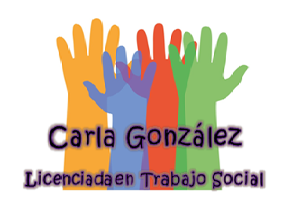

Soy Alicia Carla González, Trabajadora Social con 12 años de experiencia dedicada al acompañamiento y la intervención social, con un enfoque en la justicia social y la promoción de derechos. A lo largo de mi carrera, he trabajado en diversas instituciones públicas y privadas, siempre comprometida con el bienestar y la equidad social.

Sobre mi
He sido parte de importantes equipos interdisciplinarios, como el Centro Integral de Género de Gendarmería Nacional, donde intervine en el abordaje y seguimiento de casos de violencia por motivos de género en diversos contextos (doméstico, laboral e intrafamiliar), y participé en la producción de informes interdisciplinarios en investigaciones internas.
Además, formé parte del equipo técnico del Centro Terapéutico “Madre Tierra” (2022-2023), realizando entrevistas de admisión, asesoramiento y seguimiento de casos, y elaborando informes socio-económicos en el marco de intervenciones interdisciplinarias. Mi experiencia también incluye mi labor en la Dirección de Bienestar y Sanidad de Gendarmería Nacional, donde trabajé con personal en actividad y retirados, así como con sus familias, brindando asesoramiento y apoyo en situaciones especiales y necesidades básicas, además de articular programas de asistencia y promoción.
Mi trayectoria también incluye años de trabajo en la Fundación para la Educación y la Capacitación en el Siglo XXI “Tiempo de Crecer” (2012-2019), donde me desempeñé en la elaboración de informes socio-ambientales, la intervención familiar, la coordinación de talleres y la ejecución de proyectos. Asimismo, llevé a cabo investigaciones cuantitativas y cualitativas para conocer las características socioeconómicas de las familias usuarias de los servicios del Jardín Maternal.
He trabajado en la Obra Social de los Empleados Públicos de la Provincia de Corrientes IOSCOR, en el Área de Discapacidad, brindando apoyo y asesoramiento a personas con discapacidad en situaciones especiales.
Mi compromiso como trabajadora social está basado en la intervención activa y la construcción de redes de apoyo, siempre buscando la mejora integral de las personas y las comunidades. Mi objetivo es continuar aportando mi experiencia y habilidades para contribuir al desarrollo social y humano, promoviendo la inclusión, la equidad y el bienestar.